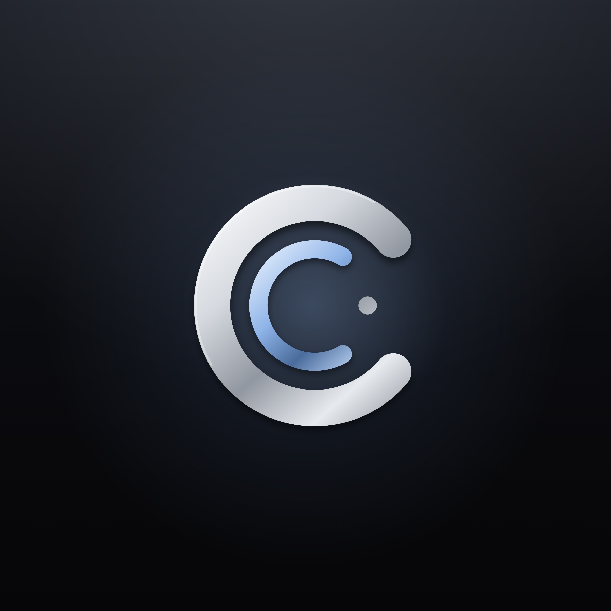

Corres · Privacy Policy
Your mail stays yours.
Corres reads and sorts your email on your iPhone. It doesn't sell your data, show ads, or send your mail to an AI company.
Effective October 19, 2026. Corres is made by Anwar Creative Studio (“we”).
What Corres accesses
When you connect a Gmail account, you sign in with Google directly; Corres never sees your password. Google gives Corres permission to read, send and organize (archive, label, mark read, move to Trash) your Gmail, which is what an email app needs to work. If you open Out of Office in Settings, Corres asks Google for one more permission, to change your Gmail settings, so it can turn your vacation reply on and off; it's asked for only then, never at sign-in. You can revoke any of this anytime in your Google Account settings or by removing the account in Corres.
When you connect an Outlook account (Outlook.com, Hotmail, Live, or a work or school Microsoft 365 account), you sign in with Microsoft directly; Corres never sees your password. Microsoft gives Corres permission to read and organize your mail (archive, move, flag, mark read, categories), send mail as you, change your mailbox settings so Out of Office can turn your automatic replies on and off, and read your basic profile (your name and photo, shown in Corres). You can revoke this anytime at account.microsoft.com under Privacy → Apps and services, through your organization's IT for a work account, or by removing the account in Corres.
When you connect iCloud Mail, Apple asks other mail apps for an app-specific password instead of your Apple Account password. You make one at account.apple.com and give it to Corres, which checks it with iCloud and keeps it in your device's Keychain. Corres connects to iCloud's mail servers directly with it to read, organize and send your mail, and to file a copy of what you send in Sent. Corres never sees your Apple Account password. You can turn the app-specific password off anytime at account.apple.com, or remove the account in Corres.
If you allow it, Corres also reads your iPhone Contacts, on your device only, to suggest people as you type and show their photos. It never uploads them.
Where your mail is processed
- On your device. Your messages are downloaded from Google, Microsoft or Apple to your iPhone or iPad and stored there, protected by iOS. Sorting, summaries, suggested replies, rewrites, dictation and answers to questions in Search all run on your device using Apple Intelligence and Apple's on-device speech recognition.
- Never on our servers, never with AI companies. The contents of your email are not sent to Anwar Creative Studio or to any AI provider.
- Your sign-in permission (or, for iCloud, your app-specific password) is kept in your device's Keychain, shared only with Corres's own Share extension so you can write an email from the Share sheet.
- New-mail notifications are written on your device. When a notification arrives, Corres's notification extension fetches that one email from Google or Microsoft with your own sign-in and shows its sender, subject and opening words. Nothing about the email passes through our servers.
- Your account settings (each account's name, color, signatures and notification choices) are kept on your device.
- What Corres learns from you (where you move a sender's mail, what you mark as needing no action, your habits) is kept on your device, and you can see and forget any of it in Settings.
- Your Corres choices on your other devices. So your iPhone, iPad and Mac agree, Corres keeps a small record of what you decide in it in your own private iCloud storage, which Apple holds for your Apple Account: conversations you moved, snoozed or pinned (by their identifiers, not their contents), senders you allowed or blocked, your VIPs, what Corres has learned, your signatures and your settings. No email content is stored there, and we can't read it. Signing out of iCloud on a device stops it.
- Changes made without a signal (archive, delete, flag, mark read) wait on your device and are sent to Google, Microsoft or Apple once you're back online.
- Send Later keeps the email on your iPhone and sends it from there at the time you chose. It never waits on our servers.
What our servers see
- New-mail notifications (optional). If you turn on notifications, a small relay stores your device's notification token and the email addresses of your connected accounts, so it can tell your device that something changed. Google tells the relay only that a mailbox changed. For an Outlook account, Microsoft tells it that a new message arrived and gives that message's identifier, which the relay passes straight to your device so it can fetch the email itself; the relay keeps the Outlook subscription's identifier and a scrambled (hashed) copy of the secret Corres uses to confirm notifications really come from Microsoft. The relay never receives a subject, sender or message. Turning notifications off or removing an account deletes these records.
- Instant Notifications for iCloud (optional, off by default). If you turn it on for an iCloud account, your iPhone seals that account's app-specific password so that only Corres's mail watcher can open it, and sends it to our server. The watcher uses it to keep a connection to your iCloud Inbox and tells your iPhone when new mail arrives; your iPhone then fetches and shows the email itself. The watcher never reads, downloads or stores your email. Turning the switch off, removing the account, or revoking the password at account.apple.com deletes it. Without it, Corres checks iCloud from your device whenever iOS gives it time.
What we don't do
- No advertising, no analytics or tracking SDKs, no selling or sharing of your data.
- No read receipts: Corres never tells anyone you opened their email. Remote images and tracking pixels in email are blocked until you choose to show them.
- Your email is never used to train AI models, ours or anyone else's.
Google user data
Corres's use and transfer of information received from Google APIs adheres to the Google API Services User Data Policy, including the Limited Use requirements.
Purchases
Corres Pro is sold through the App Store. Apple handles payment; we receive no card details. Your plan is verified on your device from Apple's signed receipts.
Deleting your data
Remove an account in Corres (Settings → the account → Remove Account) to delete its mail and settings from your device and its notification record from the relay. Deleting the app removes everything stored on your device. Nothing is deleted from Gmail, Outlook or iCloud themselves.
Children
Corres is not directed to children under 13.
Changes and contact
We'll update this page if anything changes and note the date above. Questions or requests about your data: privacy@corres.app.